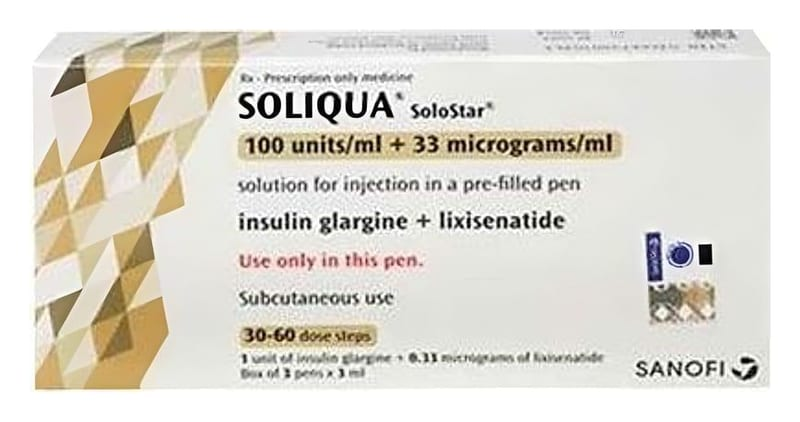

Soliqua Solostar 100 U/ml + 33 mcg/ml SC Enjeksiyonluk Çözelti İçeren Kullanıma Hazır Kalem, 3 Kalem

Ne için kullanılır
KT · Bölüm 1SOLIQUA bir SoloStar kullanıma hazır enjeksiyon kalemi içine yerleştirilmiş bir cam kartuş içine doldurulmuş berrak ve renksiz çözelti şeklindedir.
Her bir SOLIQUA kalemi 3 mL çözelti içerir.
3 ve 5 adet kalem içeren ambalaj boyutları mevcuttur. Tüm ambalaj boyutları piyasaya sunulmayabilir. Ambalaj iğne içermemektedir. SOLIQUA iki etkin madde içeren enjeksiyon yoluyla uygulanan diyabet (şeker hastalığı) ilacıdır: • İnsülin glarjin: tüm gün boyunca kan şekerinizi (glukoz) kontrol altına almaya yardım eden uzun etkili bir insülin türüdür.
• Liksisenatid: kan şekerinizi düşürmek için vücudunuzun kendi ilave insülinini üretmesine yardım eder ve gıdalardan şeker emilimini yavaşlatır.
SOLIQUA, Tip 2 diyabet hastalarının tedavisinde, kan şekeri seviyesi yüksek olduğunda kan şeker seviyelerinin kontrolüne yardımcı olmak için kullanılır.
Diğer ilaçlar kan şekeri seviyelerinizi kontrol etmek için yeterli olmadığında metformin ile birlikte verilir.
Diyabet tedavisi için başka bir ilaç kullanıyorsanız, SOLIQUA'ya başlarken kullanmayı bırakmanız gerekip gerekmediğini doktorunuzla konuşmalısınız.